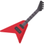

Найкращі їжаки
Домашність
Цікавість
Історія
Авторство
Їжак (лат. Erinaceus; діал. яри́ч, яре́й) — один з 9-ти родів ссавців родини Їжакових (Erinaceidae). В Україні природно поширений по всій території білочеревий їжак, в окремих місцях сходу України зустрічається вухатий їжак. Окрім природніх мешканців, у якості садових тварин можуть утримуватись їжак європейський та як домашній улюбленець — карликовий африканський їжак.
Ласкаво просимо на наш сайт – шкільне завдання, видане для перевіки умінь. Але також місце, де ми доводимо, що думки можна виражати будь-якими способами, навіть через тему їжаків! Ми створили цей проект, щоб показати, що творчість не має меж, а ідеї можуть набувати найнесподіваніших форм. Чому їжаки? Тому що вони маленькі, колючі, але водночас чарівні та унікальні – так само, як і кожен із нас. Цей сайт – не просто сторінка про їжаків, а спосіб виразити себе. Тут ви знайдете цікаві факти, веселі моменти, креативні рішення та, можливо, навіть трохи мистецтва (воно повсюду), пов’язаного з цими дивовижними створіннями. Ми хочемо показати, що навіть така, здавалося б, проста тема може стати джерелом натхнення, якщо поглянути на неї творчо. Їжаки – це символ нашого проекту, його душа. Вони уособлюють нестандартне мислення та оригінальний підхід до звичних речей. Ми любимо їжаків, і через цей сайт хочемо передати вам частинку цього захоплення. Сподіваємося, що наша ідея вас зацікавить, розважить або навіть надихне на власні креативні експерименти. Ласкаво просимо у світ їжаків!
в душі не знаю що тут має бути поки що інші морозяться не дають ідеї (вони не дали ТоТ а Ксю сказала так лишити)